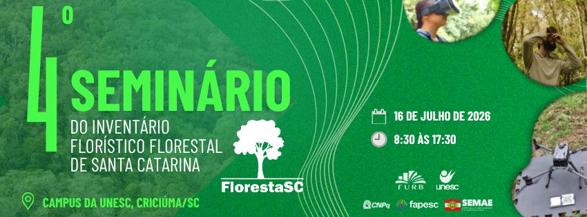
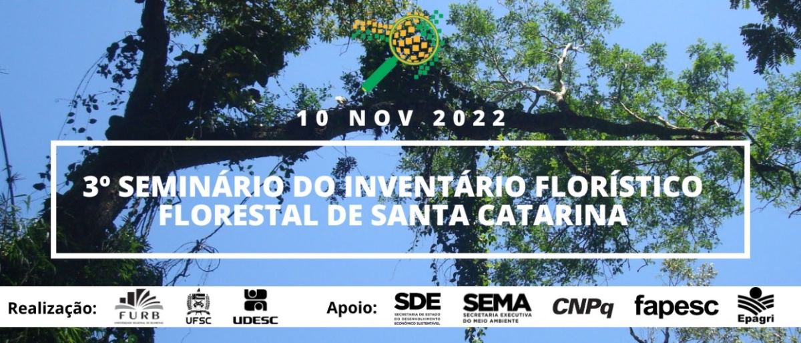
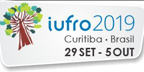
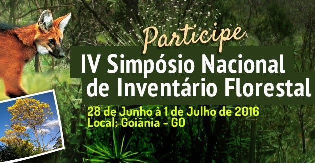
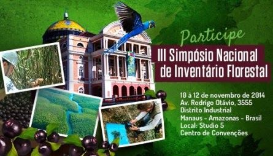
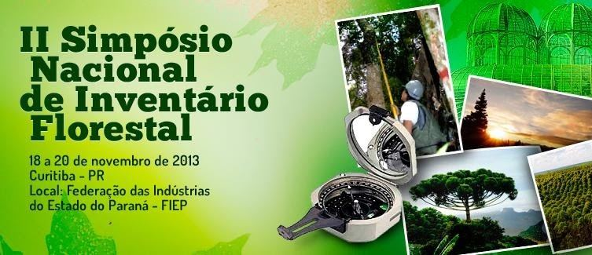

Abaixo estão listados eventos organizados pelo IFFSC e eventos onde foram proferidas palestras sobre o projeto:
- [Link] 4º Seminário do FlorestaSC - Inventário Florístico Florestal de Santa Catarina - Julho/2026 - Criciúma/SC
- [Link] 3º Seminário do Inventário Florístico Florestal de Santa Catarina - Novembro/2022 - Florianópolis/SC
- [Link] 25º edição da IUFRO (International Union of Forest Research Organizations) - Outubro/2019 - Curitiba/PR
- [Link] IV Simpósio Nacional de Inventário Florestal - Junho/2016 - Goiânia/GO
- [Link] III Simpósio Nacional de Inventário Florestal - Novembro/2014 - Manaus/AM
- [Link] II Simpósio Nacional de Inventário Florestal - Novembro/2013 - Curitiba/PR
- [Link] I Simpósio Nacional de Inventário Florestal - Novembro/2012 - Natal/RN
- [Link] I Workshop - IFF Socioambiental - Setembro/2011 - Florianópolis/SC
- [Link] II Seminário Sobre Inventário Florestal - Maio/2011 - Blumenau/SC
- [Link] I Seminário de Apresentação dos Resultados do Inventário Florístico Florestal de Santa Catarina (2007/2008) - Março/2009 - Blumenau/SC
Julho 2026
4º Seminário do FlorestaSC - Inventário Florístico Florestal de Santa Catarina

O 4º Seminário do FlorestaSC - Inventário Florístico Florestal de Santa Catarina aconteceu no dia 16 de julho de 2026, em Criciúma-SC, no Auditório Edson Rodrigues (UNESC). O seminário teve como objetivo divulgar os resultados das últimas atividades de pesquisa do FlorestaSC, com foco na aplicação de novas tecnologias.
Confira a programação e as palestras ministradas do seminário:
- Retrospectiva FlorestaSC: 19 anos do ‘censo’ das florestas. (Dr. Alexander Vibrans)
- Mudanças da distribuição de espécies arbóreas sob efeito das mudanças do clima. (Dr. André de Gasper e MSc. Gabriel Rosa)
- Dinâmica da cobertura florestal de SC: uma atualização. (MSc. Adilson Nicoletti)
- Ferramentas para acesso, uso e aplicação dos dados do FlorestaSC (MSc. Débora Lingner)
- Dinâmica das florestas catarinenses: Ingressos, crescimento e mortalidade (Biomassa e Carbono). (MSc. Laio Oliveira)
- Novas tecnologias apoiando o inventário: sensores LiDAR e multiespectral, montados em drone. (MSc. Murilo Schramm)
- Monitoramento de áreas de regeneração e identificação de espécies arbóreas com técnicas de IA. (Dr. Jonathan Müller)
- E os ecossistemas não florestais? Flora de escarpas e divulgação científica na Serra do Rio do Rastro. (MSc. Julia Sandrini)
- Impactos antrópicos alteram a composição de árvores em Santa Catarina. (Dra. Fernanda Ribeiro)
- O que a vegetação contemporânea nos conta sobre a história indígena? (Dra. Aline P. Cruz)
Além das palestras, foram realizadas duas mesas-redondas, com participação de autoridades representando as entidades SEMAE, EPAGRI, PMA, CREA e AEFVALE, intituladas:
- Ferramentas para acesso, uso e aplicação dos dados do FlorestaSC
- Impacto do FlorestaSC nas políticas públicas de SC e perspectivas do programa
Nos intervalos, os participantes do evento puderam ainda prestigiar a Demonstração de Aplicativos de realidade virtual, cuja exposição foi conduzida pelos pesquisadores MSc. Nando Rocha e Msc. Débora Lingner.
O evento também foi transmitido ao vivo e as palestras e mesas redondas podem ser revistas em nosso canal do YouTube.
Novembro 2022
3º Seminário do Inventário Florístico Florestal de Santa Catarina

O 3º Seminário do Inventário Florístico Florestal de Santa Catarina aconteceu no dia 23 de novembro de 2022, em Florianópolis-SC, no Auditório Tito Sena (FAED/UDESC). O seminário teve como objetivo socializar os resultados das medições em 303 Unidades Amostrais do 2° Ciclo do IFFSC, realizadas entre 2014 e 2019.
Acesse aqui as apresentações do seminário:
- IFFSC – 15 anos de pesquisa: retrospectiva e desafios (Alexander C. Vibrans);
- Mudanças na riqueza de espécies das florestas (André L. de Gasper);
- Dinâmica do estoque de carbono das florestas catarinenses (Laio Z. Oliveira);
- Dinâmica da diversidade genética em espécies arbóreas de SC (Tiago Montangna);
- Acesso aos Dados do IFFSC – como encontrar as informações nos bancos de dados on-line (Débora V. Lingner).
O evento também foi transmitido ao vivo e as palestras estão disponíveis para asssistir no nosso canal do YouTube.
Outubro 2019
25º edição da IUFRO - Curitiba/PR

A 25º edição da IUFRO (International Union of Forest Research Organizations) aconteceu entre os dias 29 de setembro a 05 de outubro de 2019, em Curitiba-PR na Expo Unimed Curitiba. O evento foi organizado pelo Serviço Florestal Brasileiro e Embrapa e contou com a participação de mais de 2500 cientistas, de mais de 90 países.
A equipe do IFFSC realizou ao todo 4 apresentações orais e 5 apresentações de poster, a seguir:
Junho 2016
IV Simpósio Nacional de Inventário Florestal - Goiânia/GO

O IV Simpósio Nacional de Inventário Florestal aconteceu entre os dias 28 de junho a 01 de julho de 2016, em Goiânia-GO no centro de eventos Oliveira's Place, organizado pelo Serviço Florestal Brasileiro em conjunto com a Embrapa e a Universidade Federal de Goiás, com patrocínio do Banco Interamericano de Desenvolvimento e da FAO (Organização das Nações Unidas para Agricultura e Alimentação) e apoio do Projeto Profloresta e do Ministério do Planejamento e da União Europeia, por meio do Projeto Apoio aos Diálogos Setoriais Brasil-União Européia.
Para visualizar outras informações clique aqui o qual será direcionado para a página dos Simpósios no site do Inventário Florestal Nacional.
Novembro 2014
III Simpósio Nacional de Inventário Florestal - Manaus/AM

O III Simpósio Nacional de Inventário Florestal aconteceu entre os dias 10 a 12 de novembro de 2014, em Manaus-AM cumprindo seu maior objetivo que é promover a troca de experiências sobre inventários florestais, em todas as suas diferentes especificidades e abordagens
Objetivos Específicos:
• Atualizar os participantes sobre o andamento e a estratégia de implementação do primeiro ciclo do IFN no Brasil;
• Compartilhar experiências entre instituições envolvidas no planejamento e implementação do IFN no país;
• Compartilhar experiências do planejamento e implementação de inventários florestais em outros países;
• Compartilhar experiências de inventários florestais no país, através da apresentação de trabalhos voluntários;
• Disponibilizar os anais do evento, com os resumos publicados.
O evento contou com a apresentação de mais de 100 trabalhos científicos, além de relatos de experiências de países da América do Norte e do Sul na realização de inventários florestais.
Novembro 2013
II Simpósio Nacional de Inventário Florestal - Curitiba/PR

O II Simpósio Nacional de Inventário Florestal aconteceu entre os dias 18 a 20 de novembro de 2013, em Curitiba-PR e apresentou alguns avanços em relação à edição anterior.
Desta vez o evento não se restringiu apenas ao contexto do Inventário Florestal Nacional, mas contemplou também outras iniciativas e projetos relacionados aos inventários de recursos florestais.
Novembro 2012
I Simpósio Nacional de Inventário Florestal - Natal/RN
O I Simpósio Nacional de Inventário Florestal foi organizado pelo Serviço Florestal Brasileiro (SFB) em parceria com a Embrapa Florestas.
O evento reuniu experiências sobre inventários florestais no país, tendo como referência o Inventário Florestal Nacional.
Compareceram aproximadamente 50 participantes do Brasil, além de participação internacional de Anne Branthomme, FAO/Roma.
Abaixo segue apresentações realizadas pela equipe do IFFSC.
Terça-feira, 27 de novembro de 2012
- Painel 1: Experiências de implementação em campo (Alexander C. Vibrans, IFFSC-Furb)
- Painel 3: Desafios metodológicos para inventários do IFN - Identificação Botânica (Lúcia Sevegnani, IFFSC-Furb)
- Painel 4: Resultados e onde podemos chegar - Análise estatística de dados de campo (Alexander C. Vibrans, IFFSC-Furb)
- Painel 4: Resultados e onde podemos chegar - Levantamento Socioambiental (Juarez Muller, IFFSC-Epagri/EEI)
- Painel 4: Resultados e onde podemos chegar - Sistemas de Informações (Joelma Miszinski, IFFSC-Epagri/Ciram)
Para visualizar outras apresentações clique aqui o qual será direcionado para a página do Simpósio no site do Inventário Florestal Nacional.
Setembro 2011
Workshop Setembro 2011
O "I Workshop - IFF Socioambiental" teve como objetivo divulgar os resultados do levantamento socioambiental do Inventário Florístico Florestal de Santa Catarina com a identificação das espécies florestais nativas mais importantes do ponto de vista socioambiental e cultural, seus usos atuais e potenciais e caracterização das populações rurais do entorno das parcelas de campo e de suas relações e percepções sobre as florestas nativas.
Sexta-feira, 23 de setembro de 2011
- Política florestal de Santa Catarina (Hilário Gottselig, Diretor da Agricultura e Pesca Familiar)
- Pagamento de serviços ambientais (Flávia Hila, Diretora de Mudanças Climáticas e Desenvolvimento Sustentável)
- Visão e expectativas do setor produtivo (Joãozinho Althoff, FETAESC)
Quinta-feira, 22 de setembro de 2011
- IFFSC: Histórico/objetivos/metas (Juarez J.V. Muller, Epagri Itajaí)
- IFFSC: O estado de conservação das florestas catarinenses (Alexander C. Vibrans, FURB Blumenau)
- IFFSC: Diversidade Genética das espécies avaliadas (Maurício S. Reis, UFSC/CCA Fpolis)
- IFN: Levantamento socioambiental do inventário florestal nacional (Monique Pinheiro Santos, Gerência de Informações/MMA Brasília)
- LSA: Metodologia utilizada no Levantamento Socioambiental (Luiz Toresan, Epagri Fpolis)
- LSA: Uso e importância das madeiráveis (Pedro Nicolau Serpa e Alécio Borinelli, Epagri Itajaí)
- LSA: Uso e importância das comestíveis e ornamentais (Teresinha Catarina Heck e Neri Samuel Dalenogare, Epagri Itajaí)
- LSA: Uso e importância das bioativas (Antônio Amaury Silva Júnior e Airton Rodrigues Salermo, Epagri Itajaí)
- LSA: Espécies potenciais e a percepção da floresta e de seus recursos (Juliane G. Knapik Justen e Luiz Toresan, Epagri)
- IFFSC: Sistemas de informações do inventário florístico florestal (Joelma Miszinski, Emanuela S.P. Pinto e Juliana Mio de Souza, Epagri/Ciram Fpolis)
- Plantas do futuro (Alexandre Siminski, UFSC/LRAS)
- Incentivo da Fapesc à pesquisa científica para florestas nativas (Mário Ângelo Vidor, Diretor da FAPESC)
Maio 2011
Seminário Maio 2011
O "2º Seminário sobre Inventário Florestal" teve como objetivo a criação de um fórum de discussão sobre inventários florestais e levantamentos florísticos onde foram apresentados os resultados de quatro anos de trabalhos realizados pela equipe do IFFSC. Após as apresentações ocorreu a discussão dos resultados com participação dos colaboradores e consultores externos do IFFSC e discussões das implicações dos resultados do IFFSC para uma política de uso e conservação dos recursos florestais catarinenses. Houveram apresentações relacionadas a identificação de novas demandas e linhas de pesquisa, a questões como cenários de mudanças climáticas, pagamentos por serviços ambientais e manejo dos recursos florestais.
Para mais informações,clique aqui, para acessar a página do seminário na Furb.
Sexta-feira, 06 de maio de 2011
- Padrões florísticos do componente arbóreo das florestas subtropicais do Domínio da Mata Atlântica (Ary Teixeira Oliveira Filho, UFMG)
- The challenge to forest adaptive management: operational tools for the maintenance of biodiversity value (Sandra Luque, Institute for Agricultural and Environmental Engineering Research, Cemagref, Grenoble, França)
- Perspectivas para o uso de ecossistemas florestais em Santa Catarina (Alfredo C. Fantini, UFSC)
- Impactos do corte seletivo de árvores sobre a diversidade genética e demografia de espécies arbóreas tropicais (Alexandre Sebbenn, Instituto Florestal de São Paulo)
- Pagamento de serviços ambientais: uma alternativa para conservação e renda familiar (Sven Wunder, CIFOR)
- Conservação de plantas no Brasil: desafios e perspectivas (Gustavo Martinelli, JBRJ)
Quinta-feira, 05 de maio de 2011
Apresentação e discussão dos resultados do IFFSC (equipe do IFFSC)
- IFFSC: Objetivos, metas, arranjo institucional e métodos (Mauricio S. dos Reis, Alexander C. Vibrans)
- Diversidade nas florestas - quantas espécies temos e como são distribuídas? (Lúcia Sevegnani, André L. de Gasper, Annete Bonnet)
- Estrutura das florestas - qual a composição, conjunto de espécies características, estoque de madeira e biomassa nas florestas? (Lauri A. Schorn, Alexandre Uhlmann, Moacir Marcolin)
- Qual é a diversidade genética de populações das espécies ameaçadas? (Mauricio Sedrez dos Reis)
- Levantamento socioambiental: como a população enxerga e utiliza recursos da floresta? (Juarez J. Vanni Müeller, Juliane G. Knapik Justen, Epagri)
- Síntese: qual é o estado de conservação das nossas florestas?( Lúcia Sevegnani, Mauricio Sedrez dos Reis)
- O Inventário Florestal Nacional – IFN (Joberto Veloso de Freitas, SFB/MMA)
Quarta-feira, 04 de maio de 2011
Apresentações dos resultados de Projetos de Pesquisa associados ao IFFSC
- A Fragmentação da Floresta Ombrófila Mista em Santa Catarina (Suélen S. Schaadt, PPGEA/FURB)
- A Influência de Variáveis Climáticas sobre Composição e Estrutura da Floresta Ombrófila Densa em Santa Catarina (Débora V. Lingner, IFFSC, PPGEA/FURB)
- Diversidade de Pteridófitas em Santa Catarina (André L. de Gasper, IFFSC, PPBV/ICB/UFMG)
- Existem Espécies Raras na Floresta Estacional Decidual? (Claudia Fontana, PPGEA/FURB)
- Como se Distribuem as Mimosoideae - Fabaceae nas Regiões do Planalto e Oeste de Santa Catarina? (Gisele Müller Amaral, PPGEA/FURB)
- Distribuição e riqueza de espécies arbóreas no Estado de Santa Catarina: modelos atuais e futuros (Ernestino de Souza Gomes Guarino, EMBRAPA Acre)
- Padrões de divergência e convergência de atributos funcionais da flora arbórea ao longo de um gradiente latitudinal na Floresta Ombrófila Densa no Sul do Brasil (Adriane Esquivel Muelbert (PPGEcologia/UFRGS)
- Diversidade e distribuição de bromélias epifíticas em Floresta Ombrófila Densa, Criciúma, Santa Cataria, Brasil (Peterson Teodoro Padilha, L. C. de Oliveira, E. B. Dalmolin, T. E. V. Azeredo, V. Citadini-Zanette (UNESC))
- Composição florística da comunidade arbórea no Parque Estadual da Serra Furada, Santa Catarina, Brasil. Ronaldo dos Santos Junior, M. R. Pasetto, R. Martins, R. dos Santos (UNESC)
Conferência de Abertura
Um olhar para o passado: Dinâmicas vegetacionais, climáticas e do fogo no quaternário tardio do Sul do Brasil (Hermann Behling, Universidade de Göttingen, Alemanha)
Março 2009
Seminário Março 2009
Os resultados da fase 2 do projeto Inventário Florístico Florestal de Santa Catarina (etapa 2007/2008) foram apresentados ao público em um seminário em Blumenau, nos dias 12 e 13 de março de 2009. Neste evento, o relatório final desta fase foi entregue ao Secretário de Agricultura, Antonio Ceron, e ao Presidente da FAPESC, Diomário de Queiroz.
- Síntese dos Resultados da Meta 2 (Alexander C. Vibrans , FURB)
- Metodologia da Meta 2 (Alexander C. Vibrans, FURB)
- Resultados Quantitativos (Moacir Marcolin, FURB)
- Florística da Floresta Ombrófila Mista e ecótonos (Lúcia Sevegnani, FURB)
- Diversidade de Pteridófitas da Floresta Ombrófila Mista (André Luis de Gasper, IFFSC/FURB)
- Fitossociologia da Floresta Ombrófila Mista (Lauri A. Schorn, FURB)
- Estrutura espacial da abundância de espécies da Floresta Ombrófila Mista no Planalto de Santa Catarina (Alexander Uhlmann, FURB/CPAFAP-Embrapa)
- Caracterização da diversidade genética (Maurício Sedrez dos Reis, UFSC)
- Importância sócio-econômica e cultural dos recursos florestais nativos de Santa Catarina (Luiz Toresan, Epagri)
- Sistema de Informações Georreferenciadas (Lúcia Morais, Epagri)
- Lista de espécies ameaçadas (Marcos Sobral, UFMG)
- Projeto Nacional de Ações Integradas Público-Privadas para Biodiversidade (PROBIO II) (Gustavo Martinelli, JBRJ, CNCFLORA)
- Centro de Referência em Informação Ambiental e Rede Species Link (Alexandre Marino, CRIA)
FlorestaSC
florestasc@furb.br 47 3221-6100
Página migrada de floresta.sc.gov.br.